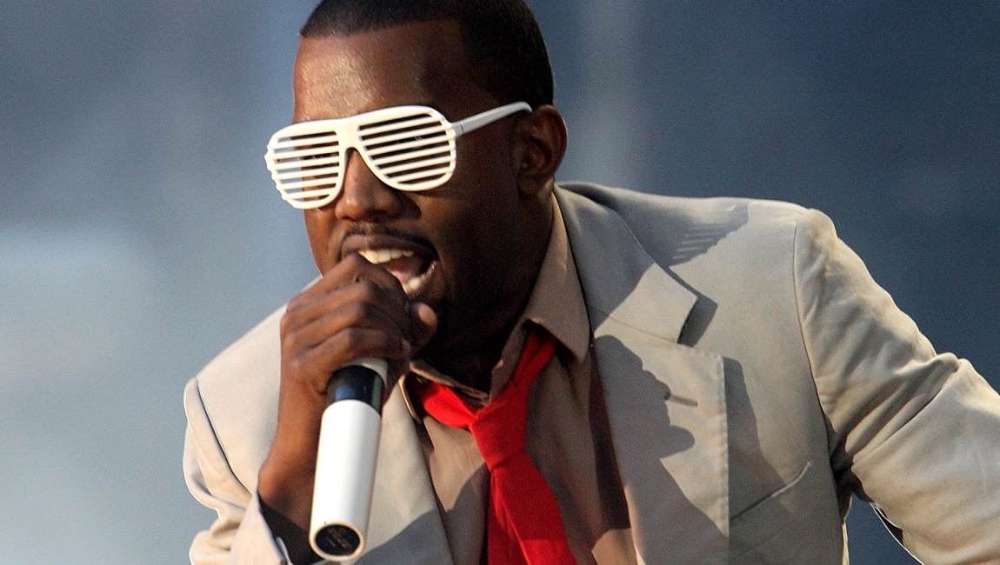
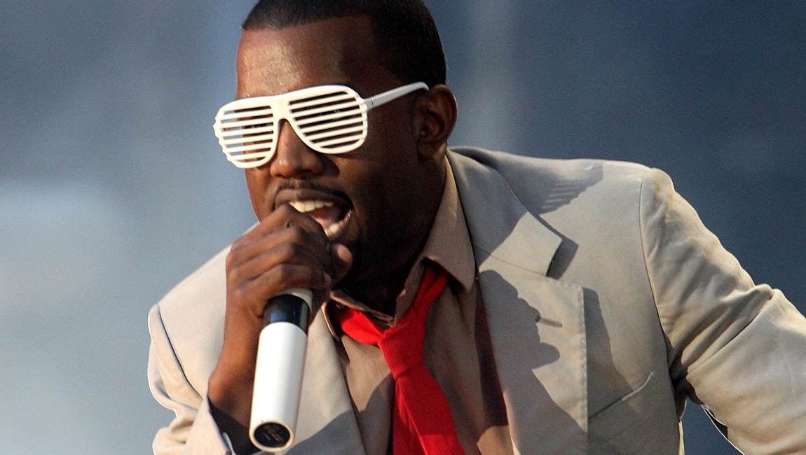
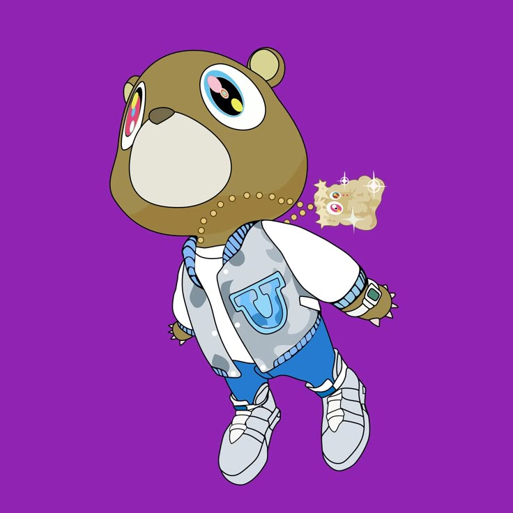
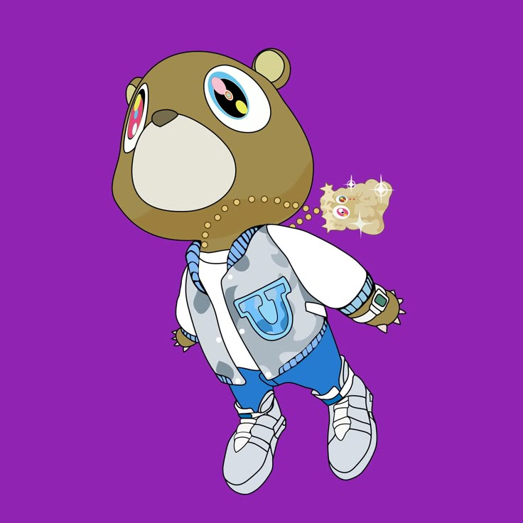

Flashing lights
Flashing lights
Flashing lights
Flashing lights
She don't believe in shootin' stars
But she believe in shoes and cars
Wood floors in the new apartment
Couture from the store's departments
You more like love to start shit
I'm more of the trips to Florida
Ordered the hors d'oeuvres, views of the water
Straight from a page of your favorite author
And the weather so breezy
Man, why can't life always be this easy?
She in the mirror dancin' so sleazy
I get a call like, "Where are you, Yeezy?"
And try to hit you with the ol-wu-wopte
'Til I got flashed by the paparazzi
Damn, these niggas got me
I hate these niggas more than the Nazis
As I recall, I know you love to show off
But I never thought that you would take it this far
But what do I know?
Flashing lights
What do I know? Know
Flashing lights
See upcoming pop shows
Get tickets for your favorite artists
I know it's been a while, sweetheart
We hardly talk, I was doin' my thing
I know I was foul, baby
A-bay, lately, you've been all on my brain
And if somebody would've told me a month ago
Frontin' though, yo, I wouldn't wanna know
If somebody would've told me a year ago
It'll go get this difficult
Feelin' like Katrina with no FEMA
Like Martin with no Gina
Like a flight with no visa
First class with the seat back, I still see ya
In my past, you on the other side of the glass
Of my memory's museum
I'm just sayin', "Hey, Mona Lisa
Come home, you know you can't roam without Caesar"
As I recall, I know you love to show off
But I never thought that you would take it this far
But what do I know?
Flashing lights
What do I know? Know
Flashing lights
As you recall, you know I love to show off
But you never thought that I would take it this far
But what do you know?
Flashing lights
What do you know? Know
Flashing lights
 

 
